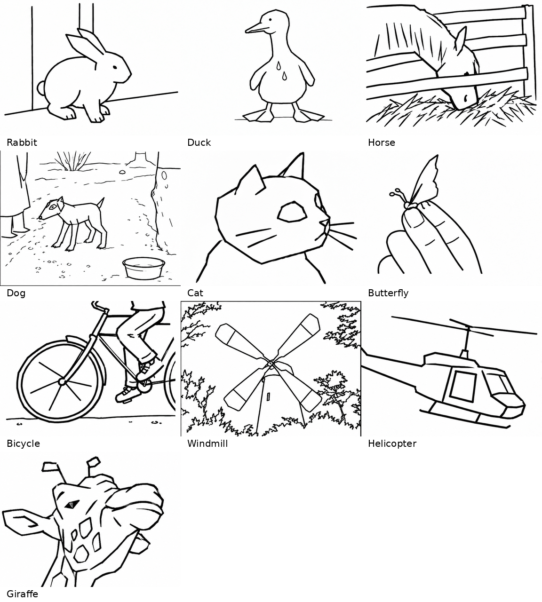
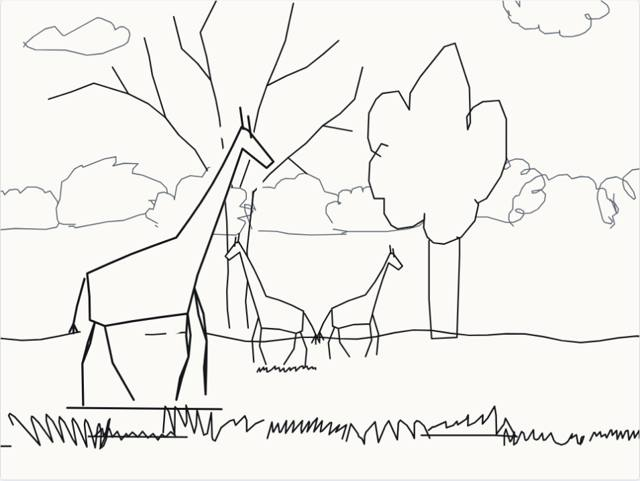
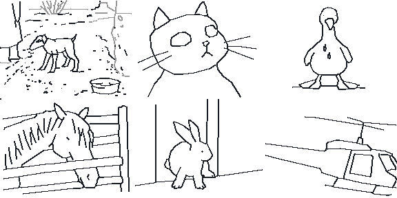

Any shot in the Moving Image Archive should be watchable as a moving Quick, Draw! cartoon: the subject redrawn in the identity of one real doodle, moving as the footage moves, on depth planes that slide with the real camera.
Two ways of working have each solved half the problem. One draws well and does not move; the other moves and does not draw well. Tracing the first into the second's strokes joins them.

An image model draws four still keys per subject in the doodle's identity; fresh critics review and the agent repairs. 10 subjects, 40 keys, 19 review rounds. No motion.

A vector rig keyed over SAM silhouettes, in-betweened with planted feet, on six depth planes under the measured camera pan. Real motion and tests; weaker drawing.

Every look-lane key traced into pen strokes: recall ≥ 0.98, every ink piece kept. The traces show the next problem: backgrounds are redrawn on every key.
Stages from the pipeline. A subject moves right only when the stage's gate passes.
Run on Giraffe Walks Past. Measured tests come from the shot file, structural tests check the file and the page, judged tests need an independent viewer. A bar is never lowered to make a test pass.
| Test | Result | Bar | Status |
|---|
index.html this page PIPELINE.md stages, contracts, tests → pages/pipeline.html AGENTS.md prompt for an agent taking one subject → pages/agent-prompt.html pages/ every other page, built by tools/build_pages.py dataset/ 345 categories × archive shots: clips.csv, clips.jsonl, categories.csv data/subject_queue.json moving subjects ranked by archive match; wave 2 marked data/quickdraw/fetch.sh fetches the exact Quick, Draw! slices the scripts read shots/giraffe-walks-past/ full shot: rig, reward, in-between, planes, tests, critic stills batches/2026-10-20-selected-drawings/ look lane: 40 keys, prompts, reviews, repair ledger traced/traced_keys.json the 40 keys as strokes, with layer split and scores tools/ trace_keys.py, build_pages.py, page templates